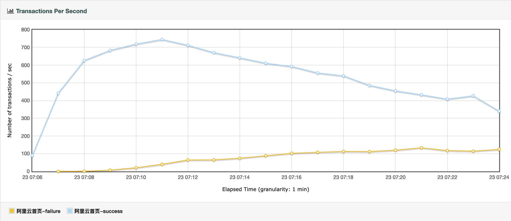

1. 开发环境
-
IntelliJ IDEA 2021.1.3
-
Gradle 7.4.2
-
JDK 17（源码级别 8、编译级别 8）
-
MySQL 5.7
-
Nginx 1.19.10
-
127.0.0.1 bee.peacetrue.cn
2. 服务器环境
3. 跨域问题
本地开发时， 前端运行在 http://localhost:3000/， 后端运行在 http://localhost:8081/。 从前端调用后台时，会导致跨域，如何解决呢？ 一般有 2 种途径：
-
后端代码允许跨域
-
通过 Nginx 反向代理到相同域名下
这里使用途径 2，保持与生产环境一致。
本地测试时使用域名 bee.peacetrue.local。
添加 hosts 条目：
/etc/hosts
echo '127.0.0.1 bee.peacetrue.local' >> /etc/hosts准备 Nginx 配置：
bee.peacetrue.local
server {
listen 80;
server_name bee.peacetrue.local;
root html/bee;
index index.html;
location / {
try_files $uri $uri/ /index.html;
}
location /monitor/ {
proxy_pass http://localhost:8080/;
}
location /api/ {
proxy_pass http://localhost:8081/;
}
location /swagger-ui/ {
proxy_pass http://localhost:8081;
}
location /v3/api-docs/ {
proxy_pass http://localhost:8081;
}
}链接到 Nginx 配置目录：
cd "$nginxDir/servers"
ln -s "$workingDir/bee/docs/antora/modules/ROOT/examples/nginx/bee.peacetrue.local.conf" bee.peacetrue.local.conf
nginx -s reload4. 已知网站
测试一些已知网站，感受它们的负载情况。
4.1. 阿里云
使用如下配置，探测网站的最佳性能：
options.properties
# 1000 秒内启动 1000 个线程，每秒增加 1 个线程，持续 1100 秒
threadCount=800
rampUpSeconds=10
loopCount=2147483647
durationSeconds=600
startupDelaySeconds=1
connectTimeout=500
responseTimeout=3000测试结果如下：

7:11 处 TPS 达到最大值 740，此时线程数为 (7:11-7:06) * 60=300。
4.2. 百度
4.2.2. 执行
配置属性：
# 300 秒内启动 300 个线程，每秒增加 1 个线程，持续 400 秒
threadCount=300
rampUpSeconds=300
loopCount=2147483647
durationSeconds=400
startupDelaySeconds=1
connectTimeout=1000
responseTimeout=3000逐步增加线程数，花尽可能少的时间，得出比较全面准确的结果。
执行测试：
jmeter -n -t test-plan.jmx -q options.properties -l result.csv -e -o report测试报告：